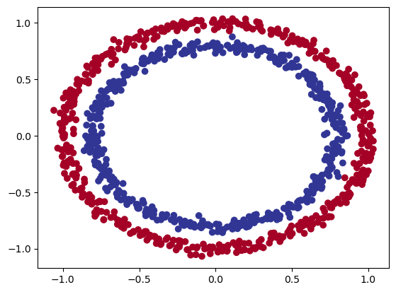
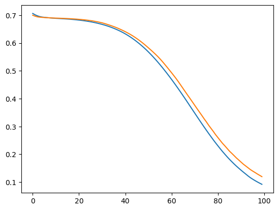

from sklearn.datasets import make_circles
import matplotlib.pyplot as plt
# Make 1000 samples
n_samples = 1000
# Create circles
X, y = make_circles(n_samples,
noise=0.03, # a little bit of noise to the dots
random_state=42) # keep random state so we get the same valuesnn classification
plt.scatter(x=X[:, 0],
y=X[:, 1],
c=y,
cmap=plt.cm.RdYlBu);
X = torch.from_numpy(X).type(torch.float)
y = torch.from_numpy(y).type(torch.float)from sklearn.model_selection import train_test_split
X_train, X_test, y_train, y_test = train_test_split(X, y, test_size=0.2, random_state=42)X_train.shapetorch.Size([800, 2])2 linear layers without a non-linearity can’t solve this problem.
class CircleClassifier(nn.Module):
def __init__(self):
super().__init__()
self.l1 = nn.Linear(2, 10)
self.l2 = nn.Linear(10, 1)
def forward(self, x):
return self.l2(self.l1(x))class CircleClassifierImproved(nn.Module):
def __init__(self):
super().__init__()
self.l1 = nn.Linear(2, 10)
self.l2 = nn.Linear(10, 10)
self.l3 = nn.Linear(10, 1)
self.relu = nn.ReLU()
def forward(self, x):
x = self.l1(x)
x = self.relu(x)
x = self.l2(x)
x = self.relu(x)
x = self.l3(x)
# x = self.relu(x)
return x
# return self.l3(self.relu(self.l2(self.relu(self.l1(x)))))nn.BCEWithLogitsLoss()BCEWithLogitsLoss()t = torch.from_numpy(X_train.numpy()).type(torch.float32)ttensor([[ 0.6579, -0.4651],
[ 0.6319, -0.7347],
[-1.0086, -0.1240],
...,
[ 0.0157, -1.0300],
[ 1.0110, 0.1680],
[ 0.5578, -0.5709]])Half is float16, Float is float32
f = nn.Linear(2, 10)(t)nn.Linear(2, 10)(t).shapetorch.Size([800, 10])# c = CircleClassifier()
c = CircleClassifierImproved()c.parameters<bound method Module.parameters of CircleClassifierImproved(
(l1): Linear(in_features=2, out_features=10, bias=True)
(l2): Linear(in_features=10, out_features=10, bias=True)
(l3): Linear(in_features=10, out_features=1, bias=True)
(relu): ReLU()
)>loss_fn = nn.BCEWithLogitsLoss()
opt = torch.optim.Adam(c.parameters(), lr=0.01)tr_loss = []
vl_loss = []accuracy_fn
accuracy_fn (y_true, y_pred)
# training loop
for epoch in range(100):
c.train()
y_pred = c(X_train).squeeze()
act_pred = torch.sigmoid(y_pred).round()
loss = loss_fn(y_pred, y_train)
tr_loss.append(loss.detach().numpy())
acc = accuracy_fn(y_train, act_pred)
opt.zero_grad()
loss.backward()
opt.step()
c.eval()
with torch.inference_mode():
v_pred = c(X_test).squeeze()
act_pred = torch.sigmoid(v_pred).round()
vloss = loss_fn(v_pred, y_test)
vl_loss.append(vloss.detach().numpy())
test_acc = accuracy_fn(y_test, act_pred)
print(f"Epoch: {epoch+1:>5} | Loss: {tr_loss[epoch]:.5f}, Accuracy: {acc:.2f}% | Test loss: {vl_loss[epoch]:.5f}, Test acc: {test_acc:.2f}%")Epoch: 1 | Loss: 0.70613, Accuracy: 50.00% | Test loss: 0.69981, Test acc: 50.00%
Epoch: 2 | Loss: 0.70133, Accuracy: 50.00% | Test loss: 0.69647, Test acc: 50.00%
Epoch: 3 | Loss: 0.69771, Accuracy: 50.00% | Test loss: 0.69404, Test acc: 50.00%
Epoch: 4 | Loss: 0.69492, Accuracy: 50.00% | Test loss: 0.69286, Test acc: 50.00%
Epoch: 5 | Loss: 0.69331, Accuracy: 50.00% | Test loss: 0.69212, Test acc: 50.00%
Epoch: 6 | Loss: 0.69220, Accuracy: 50.00% | Test loss: 0.69157, Test acc: 50.00%
Epoch: 7 | Loss: 0.69131, Accuracy: 50.00% | Test loss: 0.69106, Test acc: 53.50%
Epoch: 8 | Loss: 0.69054, Accuracy: 54.00% | Test loss: 0.69053, Test acc: 67.00%
Epoch: 9 | Loss: 0.68979, Accuracy: 65.50% | Test loss: 0.69007, Test acc: 57.00%
Epoch: 10 | Loss: 0.68913, Accuracy: 58.75% | Test loss: 0.68970, Test acc: 64.00%
Epoch: 11 | Loss: 0.68858, Accuracy: 72.50% | Test loss: 0.68941, Test acc: 60.50%
Epoch: 12 | Loss: 0.68814, Accuracy: 64.50% | Test loss: 0.68914, Test acc: 53.50%
Epoch: 13 | Loss: 0.68769, Accuracy: 56.75% | Test loss: 0.68883, Test acc: 50.50%
Epoch: 14 | Loss: 0.68720, Accuracy: 54.00% | Test loss: 0.68849, Test acc: 50.50%
Epoch: 15 | Loss: 0.68668, Accuracy: 54.12% | Test loss: 0.68817, Test acc: 50.00%
Epoch: 16 | Loss: 0.68615, Accuracy: 54.00% | Test loss: 0.68778, Test acc: 50.50%
Epoch: 17 | Loss: 0.68555, Accuracy: 53.87% | Test loss: 0.68733, Test acc: 51.00%
Epoch: 18 | Loss: 0.68484, Accuracy: 54.50% | Test loss: 0.68681, Test acc: 51.00%
Epoch: 19 | Loss: 0.68404, Accuracy: 56.00% | Test loss: 0.68626, Test acc: 58.50%
Epoch: 20 | Loss: 0.68318, Accuracy: 57.75% | Test loss: 0.68567, Test acc: 66.50%
Epoch: 21 | Loss: 0.68227, Accuracy: 67.75% | Test loss: 0.68502, Test acc: 67.50%
Epoch: 22 | Loss: 0.68128, Accuracy: 70.62% | Test loss: 0.68428, Test acc: 68.00%
Epoch: 23 | Loss: 0.68020, Accuracy: 74.12% | Test loss: 0.68347, Test acc: 69.00%
Epoch: 24 | Loss: 0.67901, Accuracy: 75.25% | Test loss: 0.68258, Test acc: 69.50%
Epoch: 25 | Loss: 0.67770, Accuracy: 75.75% | Test loss: 0.68157, Test acc: 67.50%
Epoch: 26 | Loss: 0.67626, Accuracy: 74.88% | Test loss: 0.68043, Test acc: 66.50%
Epoch: 27 | Loss: 0.67467, Accuracy: 74.62% | Test loss: 0.67915, Test acc: 66.50%
Epoch: 28 | Loss: 0.67293, Accuracy: 74.88% | Test loss: 0.67771, Test acc: 67.50%
Epoch: 29 | Loss: 0.67104, Accuracy: 75.75% | Test loss: 0.67609, Test acc: 72.00%
Epoch: 30 | Loss: 0.66899, Accuracy: 77.25% | Test loss: 0.67429, Test acc: 74.00%
Epoch: 31 | Loss: 0.66681, Accuracy: 79.12% | Test loss: 0.67234, Test acc: 73.00%
Epoch: 32 | Loss: 0.66447, Accuracy: 80.88% | Test loss: 0.67003, Test acc: 75.00%
Epoch: 33 | Loss: 0.66187, Accuracy: 82.62% | Test loss: 0.66745, Test acc: 77.50%
Epoch: 34 | Loss: 0.65910, Accuracy: 83.88% | Test loss: 0.66471, Test acc: 79.50%
Epoch: 35 | Loss: 0.65609, Accuracy: 84.50% | Test loss: 0.66191, Test acc: 81.50%
Epoch: 36 | Loss: 0.65286, Accuracy: 84.75% | Test loss: 0.65893, Test acc: 81.00%
Epoch: 37 | Loss: 0.64938, Accuracy: 84.50% | Test loss: 0.65574, Test acc: 81.50%
Epoch: 38 | Loss: 0.64567, Accuracy: 83.75% | Test loss: 0.65231, Test acc: 81.50%
Epoch: 39 | Loss: 0.64171, Accuracy: 84.00% | Test loss: 0.64861, Test acc: 81.50%
Epoch: 40 | Loss: 0.63742, Accuracy: 84.25% | Test loss: 0.64470, Test acc: 82.50%
Epoch: 41 | Loss: 0.63276, Accuracy: 85.00% | Test loss: 0.64057, Test acc: 83.00%
Epoch: 42 | Loss: 0.62778, Accuracy: 85.25% | Test loss: 0.63625, Test acc: 84.00%
Epoch: 43 | Loss: 0.62252, Accuracy: 85.88% | Test loss: 0.63162, Test acc: 84.00%
Epoch: 44 | Loss: 0.61692, Accuracy: 86.38% | Test loss: 0.62664, Test acc: 83.00%
Epoch: 45 | Loss: 0.61092, Accuracy: 86.88% | Test loss: 0.62134, Test acc: 82.50%
Epoch: 46 | Loss: 0.60456, Accuracy: 87.38% | Test loss: 0.61568, Test acc: 82.00%
Epoch: 47 | Loss: 0.59790, Accuracy: 87.62% | Test loss: 0.60965, Test acc: 82.00%
Epoch: 48 | Loss: 0.59087, Accuracy: 88.38% | Test loss: 0.60335, Test acc: 84.00%
Epoch: 49 | Loss: 0.58350, Accuracy: 88.88% | Test loss: 0.59668, Test acc: 86.00%
Epoch: 50 | Loss: 0.57580, Accuracy: 89.88% | Test loss: 0.58967, Test acc: 86.00%
Epoch: 51 | Loss: 0.56766, Accuracy: 89.88% | Test loss: 0.58240, Test acc: 85.50%
Epoch: 52 | Loss: 0.55916, Accuracy: 90.38% | Test loss: 0.57505, Test acc: 86.00%
Epoch: 53 | Loss: 0.55035, Accuracy: 90.38% | Test loss: 0.56752, Test acc: 86.50%
Epoch: 54 | Loss: 0.54119, Accuracy: 90.75% | Test loss: 0.55975, Test acc: 86.50%
Epoch: 55 | Loss: 0.53172, Accuracy: 91.12% | Test loss: 0.55162, Test acc: 87.50%
Epoch: 56 | Loss: 0.52195, Accuracy: 91.25% | Test loss: 0.54284, Test acc: 88.00%
Epoch: 57 | Loss: 0.51186, Accuracy: 91.50% | Test loss: 0.53345, Test acc: 89.50%
Epoch: 58 | Loss: 0.50148, Accuracy: 93.00% | Test loss: 0.52359, Test acc: 89.50%
Epoch: 59 | Loss: 0.49084, Accuracy: 93.50% | Test loss: 0.51348, Test acc: 90.50%
Epoch: 60 | Loss: 0.47999, Accuracy: 94.25% | Test loss: 0.50321, Test acc: 90.50%
Epoch: 61 | Loss: 0.46889, Accuracy: 94.62% | Test loss: 0.49286, Test acc: 91.50%
Epoch: 62 | Loss: 0.45752, Accuracy: 95.00% | Test loss: 0.48230, Test acc: 92.50%
Epoch: 63 | Loss: 0.44594, Accuracy: 95.38% | Test loss: 0.47142, Test acc: 93.00%
Epoch: 64 | Loss: 0.43416, Accuracy: 96.12% | Test loss: 0.45992, Test acc: 93.50%
Epoch: 65 | Loss: 0.42218, Accuracy: 96.50% | Test loss: 0.44792, Test acc: 94.00%
Epoch: 66 | Loss: 0.41001, Accuracy: 97.00% | Test loss: 0.43578, Test acc: 94.50%
Epoch: 67 | Loss: 0.39774, Accuracy: 97.50% | Test loss: 0.42370, Test acc: 94.50%
Epoch: 68 | Loss: 0.38530, Accuracy: 97.88% | Test loss: 0.41170, Test acc: 95.00%
Epoch: 69 | Loss: 0.37275, Accuracy: 98.38% | Test loss: 0.40001, Test acc: 95.00%
Epoch: 70 | Loss: 0.36025, Accuracy: 98.62% | Test loss: 0.38800, Test acc: 95.00%
Epoch: 71 | Loss: 0.34785, Accuracy: 99.25% | Test loss: 0.37590, Test acc: 96.00%
Epoch: 72 | Loss: 0.33540, Accuracy: 99.38% | Test loss: 0.36391, Test acc: 95.50%
Epoch: 73 | Loss: 0.32299, Accuracy: 99.62% | Test loss: 0.35204, Test acc: 95.50%
Epoch: 74 | Loss: 0.31074, Accuracy: 99.50% | Test loss: 0.34034, Test acc: 95.50%
Epoch: 75 | Loss: 0.29863, Accuracy: 99.62% | Test loss: 0.32815, Test acc: 96.50%
Epoch: 76 | Loss: 0.28671, Accuracy: 99.62% | Test loss: 0.31684, Test acc: 97.00%
Epoch: 77 | Loss: 0.27495, Accuracy: 99.75% | Test loss: 0.30451, Test acc: 96.50%
Epoch: 78 | Loss: 0.26350, Accuracy: 99.75% | Test loss: 0.29342, Test acc: 97.00%
Epoch: 79 | Loss: 0.25207, Accuracy: 99.75% | Test loss: 0.28239, Test acc: 97.50%
Epoch: 80 | Loss: 0.24108, Accuracy: 99.75% | Test loss: 0.27058, Test acc: 96.50%
Epoch: 81 | Loss: 0.23057, Accuracy: 99.75% | Test loss: 0.26014, Test acc: 98.00%
Epoch: 82 | Loss: 0.22004, Accuracy: 99.88% | Test loss: 0.24962, Test acc: 98.00%
Epoch: 83 | Loss: 0.20993, Accuracy: 99.88% | Test loss: 0.23933, Test acc: 98.50%
Epoch: 84 | Loss: 0.20031, Accuracy: 99.75% | Test loss: 0.23038, Test acc: 98.50%
Epoch: 85 | Loss: 0.19090, Accuracy: 100.00% | Test loss: 0.22084, Test acc: 99.00%
Epoch: 86 | Loss: 0.18199, Accuracy: 100.00% | Test loss: 0.21133, Test acc: 99.00%
Epoch: 87 | Loss: 0.17354, Accuracy: 99.88% | Test loss: 0.20343, Test acc: 99.00%
Epoch: 88 | Loss: 0.16532, Accuracy: 100.00% | Test loss: 0.19521, Test acc: 99.00%
Epoch: 89 | Loss: 0.15748, Accuracy: 100.00% | Test loss: 0.18683, Test acc: 99.00%
Epoch: 90 | Loss: 0.15006, Accuracy: 100.00% | Test loss: 0.17948, Test acc: 99.00%
Epoch: 91 | Loss: 0.14285, Accuracy: 100.00% | Test loss: 0.17194, Test acc: 99.00%
Epoch: 92 | Loss: 0.13596, Accuracy: 100.00% | Test loss: 0.16453, Test acc: 99.00%
Epoch: 93 | Loss: 0.12921, Accuracy: 100.00% | Test loss: 0.15815, Test acc: 99.00%
Epoch: 94 | Loss: 0.12239, Accuracy: 100.00% | Test loss: 0.15175, Test acc: 99.00%
Epoch: 95 | Loss: 0.11617, Accuracy: 100.00% | Test loss: 0.14526, Test acc: 99.00%
Epoch: 96 | Loss: 0.11073, Accuracy: 100.00% | Test loss: 0.13985, Test acc: 99.00%
Epoch: 97 | Loss: 0.10570, Accuracy: 100.00% | Test loss: 0.13480, Test acc: 99.00%
Epoch: 98 | Loss: 0.10094, Accuracy: 100.00% | Test loss: 0.12950, Test acc: 99.00%
Epoch: 99 | Loss: 0.09646, Accuracy: 100.00% | Test loss: 0.12458, Test acc: 99.00%
Epoch: 100 | Loss: 0.09219, Accuracy: 100.00% | Test loss: 0.11975, Test acc: 99.00%plt.plot(tr_loss)
plt.plot(vl_loss);